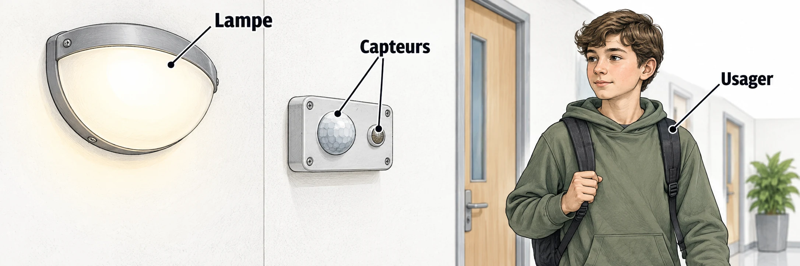

OBSERVER · EXPÉRIMENTER · EXPLIQUER
La lampe détecte la nuit
Change les informations lues par la lampe. Prévois d’abord son état sur la feuille.

✎ Garde ta feuille à côté de toi.Ordinateur : manipulations et mesures simulées. Papier : relevés, réponses, calculs et croquis.
Q4 · Relire les capteurs
- Q4 Teste 10 lux avec présence. Décoche la présence, puis refais une lecture. Note les deux états. Traduis la règle en une phrase et explique pourquoi une nouvelle lecture est nécessaire.
Sur ta feuille
Garde tes réglages, tes résultats et tes explications dans l’ordre des questions.